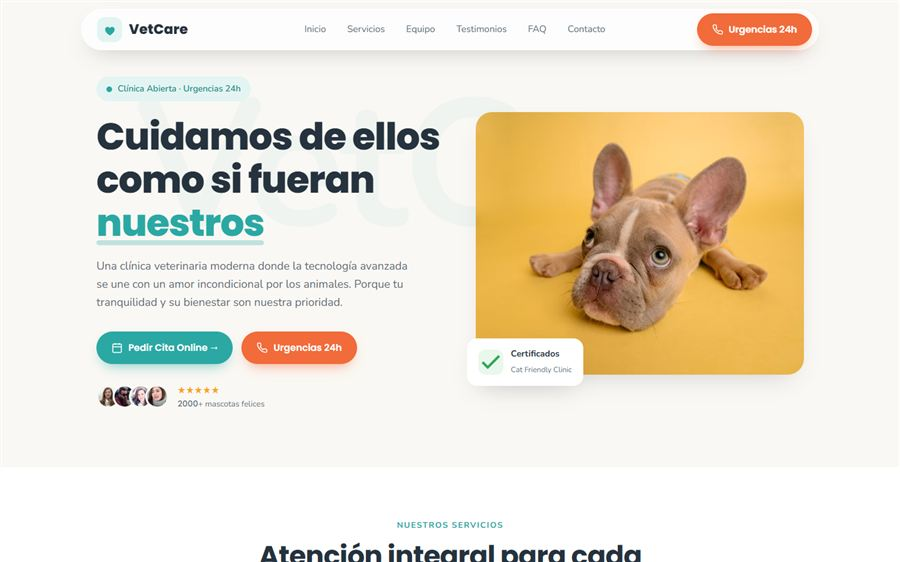
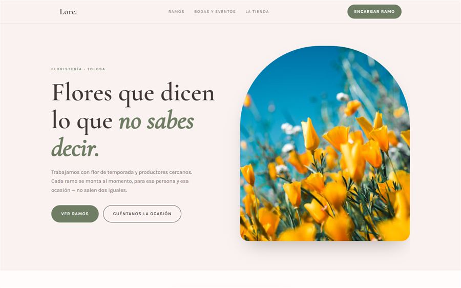

Por qué tu negocio no aparece, aunque tengas web
Google no muestra páginas web "porque existen". Las ordena según cuánto confía en ellas para responder a una búsqueda concreta. Para negocios locales, esa confianza se construye con tres piezas que trabajan juntas: tu ficha de Google Business Profile, tu página web, y lo que otros dicen de ti (reseñas y menciones). Si falta una, el resto no compensa del todo.
| Pieza | Qué aporta | Error más común |
|---|---|---|
| Google Business Profile | Apareces en el mapa y en "cerca de mí" | Ficha sin verificar o categoría genérica |
| Página web | Da contexto y autoridad a tu ficha | Web lenta o sin textos sobre tu ciudad |
| Reseñas | Confianza social, sube posiciones en el mapa | Cero reseñas o sin responder a ninguna |
1. Tu ficha de Google Business Profile, bien hecha
Es lo primero que hay que revisar, y lo más rápido de arreglar. Muchos negocios de Tolosa la tienen creada pero a medias.
- Categoría correcta y específica. No pongas "negocio local" si eres "taller mecánico" — Google tiene categorías exactas para casi todo.
- Dirección y teléfono idénticos en la ficha y en tu web. Si no coinciden, Google desconfía.
- Horario actualizado, incluyendo festivos locales. Un horario erróneo hace que la gente se vaya a la competencia.
- Fotos reales del local, del equipo y del producto — al menos 10, no solo el logo.
- Área de servicio bien definida si repartes o visitas a domicilio (Tolosa, Villabona, Anoeta, Ibarra...).
El "Local Pack": las 3 fichas que salen arriba del todo
Cuando buscas "veterinario tolosa", Google muestra un mapa con tres fichas destacadas antes que cualquier web. Entrar ahí depende sobre todo de la ficha de Google Business, no de tu página web. Es la victoria más rápida y accesible para un negocio pequeño.

2. Tu web tiene que "hablar" de tu ciudad
Google entiende dónde operas leyendo tu web, no adivinándolo. Si tu página nunca menciona "Tolosa" o "Tolosaldea" de forma natural, es más difícil que te asocie con esas búsquedas.
Dónde debe aparecer tu ciudad
- En el título de la página (el texto que sale en la pestaña del navegador).
- En la meta descripción (el resumen que sale bajo el título en Google).
- En el primer párrafo visible de la home, de forma natural — nunca forzado ni repetido sin sentido.
- En el pie de página, junto a tu dirección completa.
- En datos estructurados (schema LocalBusiness) — invisibles para el usuario, pero Google los lee directamente.
¿Quieres saber si tu web tiene estos datos bien puestos?
Revisamos gratis tu web actual: velocidad, SEO local y ficha de Google. Sin compromiso.
3. La velocidad importa más de lo que parece
Google mide cuánto tarda tu web en cargar y penaliza a las lentas, sobre todo en móvil. Una web construida con plantillas genéricas cargadas de plugins puede tardar 5-6 segundos — el usuario medio se va antes de los 3. Menos visitas, menos tiempo en la página, y peor señal para Google. Es un círculo que se retroalimenta.
4. Las reseñas son la parte que casi nadie trabaja
Tener 20 reseñas con 4,8 estrellas frente a 2 reseñas sueltas marca una diferencia enorme, tanto en posición en el mapa como en si la gente hace clic en tu ficha en vez de en la del vecino.
Cómo conseguir reseñas sin ser pesado
- Pide la reseña justo después de un buen servicio, cuando el cliente está contento — no dos semanas después por email.
- Facilita el proceso: un enlace directo por WhatsApp que abra la ventana de reseña, no "búscanos en Google".
- Responde siempre, también a las negativas. Un negocio que responde transmite que hay alguien detrás.
"Un negocio nuevo en Google no compite en igualdad de condiciones con uno que lleva cinco años y 80 reseñas — es así, y cualquiera que prometa lo contrario no dice la verdad. Lo que sí puedes controlar es no tener la ficha a medias, ni una web lenta, ni cero reseñas al mismo tiempo. Arregla lo que depende de ti y el resto llega con el tiempo."
Cuánto se tarda en ver resultados
| Acción | Cuándo se nota |
|---|---|
| Completar ficha de Google Business | Días — efecto casi inmediato en el mapa |
| Web nueva indexada en Google | 1 a 4 semanas |
| Primeras 10 reseñas | 1 a 2 meses (dependiendo del volumen de clientes) |
| Posición estable en búsquedas locales | 2 a 6 meses |
No hay atajos legítimos. Cualquiera que prometa "primera posición en una semana" está vendiendo humo, o usando técnicas que Google acaba penalizando. Lo que sí funciona es hacer bien estas cuatro piezas y ser constante.


Todas estas webs están online y navegables en nuestra página de trabajos.
Preguntas frecuentes sobre SEO local en Tolosa
¿Por qué mi negocio no aparece en Google aunque tenga página web?
Casi siempre por dos motivos: la ficha de Google Business no está completa o verificada, y la web es nueva y todavía no tiene autoridad ni reseñas. Aparecer en Google Maps depende más de la ficha y las reseñas que de la web en sí.
¿Cuánto tarda Google en indexar una web nueva?
Normalmente entre 1 y 4 semanas para que aparezca en el índice, y de 2 a 6 meses para empezar a posicionar bien en búsquedas competidas. Enviar el sitemap en Search Console acelera la primera parte.
¿Las reseñas de Google influyen en el posicionamiento?
Sí, de forma directa. El número de reseñas, la puntuación media y la frecuencia con la que llegan nuevas son factores que Google usa para ordenar los resultados del mapa local.
Si quieres que revisemos juntos la ficha de tu negocio y tu web, escríbenos y te decimos gratis qué falta. También puedes ver los proyectos que ya tenemos publicados o consultar nuestros precios cerrados.
Sigue leyendo: cuánto cuesta realmente una web profesional y por qué Instagram solo no basta.